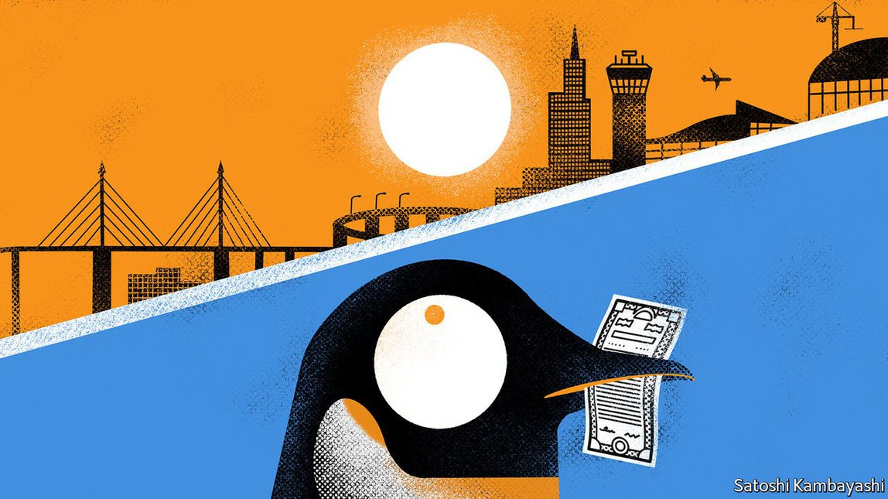

2021-09-21T14:29:30+00:00
Buttonwood
梧桐
梧桐
Do physical assets offer investors refuge from inflation?
实体资产是投资者抵御通胀的避难所吗？
實體資產是投資者抵禦通脹的避難所嗎？
Property, infrastructure and farmland have their attractions. But they could prove victims of their own success
房地产、基础设施和农田自有其吸引力。但它们的成功也可能最终害了自己
房地產、基礎設施和農田自有其吸引力。但它們的成功也可能最終害了自己

LIKE PENGUINS and the melting ice cap, investors’ natural habitat is changing. Inflation is typically bad news for mainstream assets such as stocks and bonds, because it reduces the present value of future earnings and coupons. Yet this is where, after a decade of slow growth and sluggish inflation, investors have parked much of their trillions. As consumer prices rise uncomfortably fast in much of the world, they are scrambling to protect their portfolios from the changing economic climate.
就像企鹅和融化的冰盖一样，投资者的自然栖息地也在发生变化。通货膨胀对于股票和债券等主流资产来说通常是个坏消息，因为它降低了未来收益和息票的现值。然而在经历了十年的增长缓慢和通胀低迷后，投资者已经把数万亿美元资金中的大头都投向了这些资产。随着世界大部分地区的消费价格以令人不安的速度上涨，他们正手忙脚乱地保护自己的投资组合免受经济气候变化的冲击。
就像企鵝和融化的冰蓋一樣，投資者的自然棲息地也在發生變化。通貨膨脹對於股票和債券等主流資產來說通常是個壞消息，因為它降低了未來收益和息票的現值。然而在經歷了十年的增長緩慢和通脹低迷後，投資者已經把數萬億美元資金中的大頭都投向了這些資產。隨着世界大部分地區的消費價格以令人不安的速度上漲，他們正手忙腳亂地保護自己的投資組合免受經濟氣候變化的衝擊。
A growing cohort is placing its faith in “real” assets—the physical sort, including property, infrastructure and farmland. Could these prove a haven in times of change? Investors certainly have good reasons to deem them safe places to perch. Inflation often coincides with rises in the prices of these assets. An economic expansion tends to fuel consumer-price growth as well as demand for floor space and transport or energy infrastructure.
越来越多的人把信心寄托在“实物”资产上，也就是包括房地产、基础设施和农田在内的看得见摸得着的那类资产。它们最终能够成为变化时期里的避风港吗？投资者当然有充分的理由认为它们是安全的栖息地。通胀经常与这些实体资产价格的上涨同时发生。经济扩张往往除了会刺激消费价格增长，还会刺激对建筑面积、运输或能源基础设施的需求。
越來越多的人把信心寄托在“實物”資產上，也就是包括房地產、基礎設施和農田在內的看得見摸得着的那類資產。它們最終能夠成為變化時期里的避風港嗎？投資者當然有充分的理由認為它們是安全的棲息地。通脹經常與這些實體資產價格的上漲同時發生。經濟擴張往往除了會刺激消費價格增長，還會刺激對建築面積、運輸或能源基礎設施的需求。
Moreover, these assets produce cash flows that usually track inflation. Many property leases are adjusted annually and linked to price indices. Some—those of hotels or storage space, say—are revised even more often. The revenue streams of infrastructure assets are typically tied to inflation, too, through regulation, concession agreements or long-term contracts. Meanwhile, the rising maintenance or energy costs associated with these assets are often either passed through to tenants (for property) or fixed for long periods (for infrastructure). And debt raised against them—often fixed-rate, and in copious amounts—becomes cheaper to repay.
此外，这些资产产生的现金流通常会跟踪通胀。许多房地产租约每年都会调整，并与价格指数挂钩。像酒店或仓储空间等一些房地产修正的频率甚至更高。基础设施资产的收入流通常也通过监管、特许协议或长期合同与通胀挂钩。与此同时，与这些资产相关的不断上涨的维护或能源成本一般要么转嫁给租户（对于房地产而言），要么是长期固定的（对基础设施而言）。而以这些资产做抵押的贷款（通常利率固定，且数额巨大）的偿还成本变得更低。
此外，這些資產產生的現金流通常會跟蹤通脹。許多房地產租約每年都會調整，並與價格指數掛鉤。像酒店或倉儲空間等一些房地產修正的頻率甚至更高。基礎設施資產的收入流通常也通過監管、特許協議或長期合同與通脹掛鉤。與此同時，與這些資產相關的不斷上漲的維護或能源成本一般要麼轉嫁給租戶（對於房地產而言），要麼是長期固定的（對基礎設施而言）。而以這些資產做抵押的貸款（通常利率固定，且數額巨大）的償還成本變得更低。
As a result, real assets have done well during inflationary periods. A recent report by BlackRock, an asset manager, suggests that the total returns of privately held property and infrastructure assets globally have beaten those of main stock and bond indices when inflation has exceeded 2.5%. David Lebovitz of JPMorgan Asset Management reckons that a typical pension fund should start off by allocating 5-10% of its assets to them, with the share rising to 15-20% over time. Some big funds are in fact bolder: Ontario Teachers’ Pension Plan, which manages C$228bn ($182bn), wants to lift its allocation from 21% to 30%.
因此，实物资产在通胀时期一向表现不错。资产管理公司贝莱德（BlackRock）近期一份报告显示，当通胀率超过2.5%时，全球私人持有的房地产和基础设施资产的总回报率已经超过了主要股票和债券指数。摩根大通资产管理公司（JPMorgan Asset Management）的大卫·莱博维茨（David Lebovitz）认为，一个典型的养老基金应该一开始先在实物资产上配置所管理资产的5%至10%，再逐步上调至15%至20%。一些大型基金实际上还要更大胆：管理2280亿加元（1820亿美元）的安大略省教师养老金计划（Ontario Teachers’ Pension Plan）想将其配置比例从21%提高到30%。
因此，實物資產在通脹時期一向表現不錯。資產管理公司貝萊德（BlackRock）近期一份報告顯示，當通脹率超過2.5%時，全球私人持有的房地產和基礎設施資產的總回報率已經超過了主要股票和債券指數。摩根大通資產管理公司（JPMorgan Asset Management）的大衛·萊博維茨（David Lebovitz）認為，一個典型的養老基金應該一開始先在實物資產上配置所管理資產的5%至10%，再逐步上調至15%至20%。一些大型基金實際上還要更大膽：管理2280億加元（1820億美元）的安大略省教師養老金計劃（Ontario Teachers’ Pension Plan）想將其配置比例從21%提高到30%。
That might all sound very alluring, but it should come with health warnings. For one, performance has become harder to predict: think of retail space and office blocks (under threat from e-commerce and remote work), airports and power plants (exposed to decarbonisation) and even farmland (vulnerable to climate change). The asset class may require a greater appetite for risk and more homework than its backers are used to.
这听起来可能非常诱人，但对此也应有所警惕。首先，要预测资产表现变得更难了：想想零售和办公场所（受到电子商务和远程工作的威胁）、机场和发电厂（受到脱碳的冲击）甚至农田（容易受气候变化的危害）。这个资产类别可能需要投资者提升风险偏好、多做功课，超过他们已经习惯的水平。
這聽起來可能非常誘人，但對此也應有所警惕。首先，要預測資產表現變得更難了：想想零售和辦公場所（受到電子商務和遠程工作的威脅）、機場和發電廠（受到脫碳的衝擊）甚至農田（容易受氣候變化的危害）。這個資產類別可能需要投資者提升風險偏好、多做功課，超過他們已經習慣的水平。
Another difficulty is that real assets are hard to access. They are typically private, meaning that only the most sophisticated investors have the resources and patience to find gems on their own. The rest might gain exposure in public markets, through real-estate investment trusts, infrastructure stocks or exchange-traded funds. But these tend to be closely correlated with equities, defeating the point of investing in them. Institutional investors also have access to private funds, but these tend to deploy capital only slowly and come at a cost, as their managers typically charge high fees.
另一个困难是实物资产很难获得。它们通常是私有的，这意味着只有最老道的投资者才有资源和耐心靠自己寻到宝。其他人可能会通过房地产投资信托、基础设施股票或交易所交易基金在公开市场投资这类资产。但这些投资往往与股票密切相关，如此就又从实物资产回到了股票上，失去了意义。机构投资者也能接触到私募基金，但这些基金往往资本配置缓慢，而且成本不菲，因为它们的管理人通常会收取高额费用。
另一個困難是實物資產很難獲得。它們通常是私有的，這意味着只有最老道的投資者才有資源和耐心靠自己尋到寶。其他人可能會通過房地產投資信託、基礎設施股票或交易所交易基金在公開市場投資這類資產。但這些投資往往與股票密切相關，如此就又從實物資產回到了股票上，失去了意義。機構投資者也能接觸到私募基金，但這些基金往往資本配置緩慢，而且成本不菲，因為它們的管理人通常會收取高額費用。
In any case, real assets cannot insulate an investor’s entire portfolio against inflation. Their merit is that they preserve their own value when inflation is high. But to protect all of their capital investors must seek assets that do not just tread water, but gain value more quickly during inflationary bursts than their other holdings depreciate. And there is not a lot of consensus over which ones fit the bill. Gold, commodities, inflation-linked bonds, derivatives: each has champions and detractors.
在任何情况下，实物资产都无法让投资者的整个投资组合免受通胀影响。它们的优点是能在通胀高企时保住自身的价值。但是，投资者若要保护自己的全部资本，就不能只寻觅不涨不跌的资产，还必须寻找能在通胀爆发期间快速升值的资产——速度要快过他们所持有的其他资产贬值的速度。至于哪些资产符合要求，人们并没有太多的共识。黄金、大宗商品、通胀关联债券、衍生品都各有支持者和反对者。
在任何情況下，實物資產都無法讓投資者的整個投資組合免受通脹影響。它們的優點是能在通脹高企時保住自身的價值。但是，投資者若要保護自己的全部資本，就不能只尋覓不漲不跌的資產，還必須尋找能在通脹爆發期間快速升值的資產——速度要快過他們所持有的其他資產貶值的速度。至於哪些資產符合要求，人們並沒有太多的共識。黃金、大宗商品、通脹關聯債券、衍生品都各有支持者和反對者。
Perhaps the biggest danger, though, is that real assets fall victim to their success. Many investors already turned to them over the past decade as they hunted for stable yields and sought diversification. Between 2010 and 2020 private real assets under management more than doubled, to $1.8trn. Finding things to buy is getting harder. Some $583bn raised by funds since 2013 remains unspent. A bubble is possible, says David Jones of Bank of America Merrill Lynch. The definition of a real asset may become stretched. Already some argue for it to include exotic fare such as non-fungible tokens—digital media recorded on a blockchain. Rather like penguins that huddle ever closer on a shrinking bit of ice, some investors might find themselves falling into treacherous waters.
不过最大的危险可能是实体资产会栽在自己的成功上。过去十年，许多寻求稳定收益率和多元化的投资者都已经涉足这类资产。2010年至2020年间，受管理的私人实物资产增加了一倍多，达到1.8万亿美元。值得一买的东西越来越难找。各种基金自2013年以来募集的约5830亿美元现在都还没花出去。美银美林（Bank of America Merrill Lynch）的大卫·琼斯（David Jones）认为可能存在泡沫。实物资产的定义可能会变得过于宽泛。已经有一些人主张把非同质化代币（记录在区块链上的数字媒体）这样稀奇古怪的品种也包括进来。就像在不断缩小的冰面上挤成一团的企鹅一样，一些投资者可能马上就要掉进危险的水域。
不過最大的危險可能是實體資產會栽在自己的成功上。過去十年，許多尋求穩定收益率和多元化的投資者都已經涉足這類資產。2010年至2020年間，受管理的私人實物資產增加了一倍多，達到1.8萬億美元。值得一買的東西越來越難找。各種基金自2013年以來募集的約5830億美元現在都還沒花出去。美銀美林（Bank of America Merrill Lynch）的大衛·瓊斯（David Jones）認為可能存在泡沫。實物資產的定義可能會變得過於寬泛。已經有一些人主張把非同質化代幣（記錄在區塊鏈上的數字媒體）這樣稀奇古怪的品種也包括進來。就像在不斷縮小的冰面上擠成一團的企鵝一樣，一些投資者可能馬上就要掉進危險的水域。